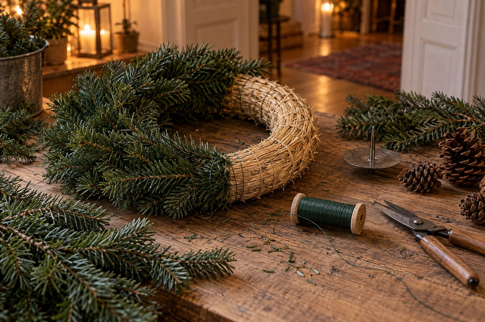

Adventskranz binden
Ein Ring aus Grün, vier Kerzen, vier Sonntage. So bindest du deinen Kranz selbst, hältst ihn bis zum 4. Advent frisch und zündest die Kerzen sicher an.
Der 1. Advent ist 2026 am 29. November, der 4. Advent am 20. Dezember. Für einen selbst gebundenen Kranz reichen ein Strohrohling, Wickeldraht, Nadelgrün und vier Kerzen, die Grundausstattung kostete im September 2026 rund 16 Euro. Nobilistanne hält ohne Wasser am längsten, nachts an einem kühlen Ort bleibt der Kranz länger frisch, und Kerzen brennen nie unbeaufsichtigt.
Die Adventssonntage 2026.
Weihnachten fällt 2026 auf einen Donnerstag. Deshalb ist der 1. Advent schon am 29. November.
Der Frische-Check.
Wähle Grün, Unterlage und Bindetag. Du siehst, ob der Kranz bis zum 4. Advent frisch bleibt.
Die Tage sind grobe Richtwerte aus den Angaben unter Quellen. Am Ende entscheiden Raumwärme und Frische beim Kauf. Rieseln die Nadeln, gehört der Kranz weg von den Kerzen.
In sechs Schritten gebunden.
Material bereitlegen
Strohrohling, Wickeldraht, Nadelgrün, vier Kerzen mit Haltern und eine Schere. Im September 2026 kostete diese Grundausstattung bei einem großen Versandhändler zusammen rund 16 Euro, ein fertiger Kranz mit 35 cm ab etwa 26 Euro.
Bündel schneiden
Schneide das Grün in Bündel aus drei bis fünf kurzen Trieben, etwa so lang wie deine Hand. Alle Bündel gleich groß, dann wird der Kranz gleichmäßig.
Draht festmachen
Wickle das Drahtende zweimal fest um den Rohling und verdrehe es. Den Draht danach nicht mehr abschneiden, sondern in einem Zug weiterwickeln.
Überlappend binden
Leg das erste Bündel schräg auf, die Spitzen zeigen in Laufrichtung. Zwei- bis dreimal straff umwickeln. Jedes neue Bündel deckt die Bindestelle des vorigen ab.
Ring schließen
Schieb das letzte Bündel unter die Spitzen des ersten, verdreh den Draht und drück das Ende ins Stroh. Abstehende Zweige mit der Schere nachschneiden.
Kerzen setzen
Stecke die Kerzen auf feste Halter aus Metall mit Teller, nicht direkt ins Grün. Das Grün rund um die Kerzen kurz halten, damit die Flamme später keinen Zweig erreicht.

Drei ruhige Wege.
Nicht jeder Kranz muss rund und dicht sein. Diese drei passen zu einer schlichten Einrichtung.
Klassisch, aber ruhig
Nobilis oder Nordmanntanne auf Stroh, vier gleiche Kerzen in Creme oder Weiß, dazu nur ein Material wie Zapfen oder getrocknete Orangen. Weniger Deko wirkt wertiger.
Luftig auf Metall
Ein Metallring, um den einzelne lange Zweige gewickelt werden. Braucht deutlich weniger Grün, hält als Ring viele Jahre und passt gut zu skandinavisch und Japandi.
Ohne Kranz
Vier Kerzen auf einem langen Tablett aus Metall oder Stein, dazwischen ein paar Zweige mit Abstand. Mit LED-Kerzen ganz ohne Flamme, gut bei Kindern und Haustieren.
Welche Farben im ganzen Raum dazu passen, steht unter Weihnachtlich dekorieren. Für den gedeckten Tisch gibt es Maße unter Weihnachtliche Tischdeko.
Sicher mit Kerzen.
Kerzen am Adventskranz sind jedes Jahr eine häufige Brandursache. Diese Regeln nennen Feuerwehr und Verbraucherschützer.
- Nie unbeaufsichtigt: Kerzen ausmachen, sobald niemand mehr im Raum ist, auch für kurze Zeit.
- Feuerfeste Unterlage: Der Kranz steht am sichersten auf Metall, Glas, Ton, Steingut oder Porzellan. Kerzen auf Halter mit Teller stecken, die das Wachs auffangen.
- Rechtzeitig wechseln: Kerzen tauschen, bevor sie ins Grün herunterbrennen. Sicherheitskerzen gehen von selbst aus, bevor sie ganz abgebrannt sind.
- Nichts Brennbares in Flammennähe: Strohsterne, Papier, Watte, Filz und Transparentpapier weg von den Kerzen. Kugeln aus Glas, Anhänger aus Metall oder Ton sind sicherer.
- Keine Zugluft: Nicht neben Vorhängen oder einem offenen Fenster. Beim Stoßlüften die Kerzen löschen oder im Blick behalten.
- Löschmittel bereit: Ein Eimer Wasser, Feuerlöschspray oder eine Löschdecke in der Nähe. Brennt es, das du nicht sofort löschen kannst: Raum verlassen, Tür schließen, 112 anrufen.
Häufige Fehler.
- Zu früh gebunden: Ein Kranz von Anfang November steht am 4. Advent selten noch gut da. Lieber um den 1. Advent binden.
- Haarspray oder Klarlack auf die Nadeln: Hält sie nicht frisch, macht sie aber leichter entflammbar.
- Platz über der Heizung: Warme, trockene Luft lässt das Grün schnell austrocknen. Auch die Sonne am Südfenster trocknet es aus.
- Draht zu locker: Trocknende Zweige schrumpfen. Sitzt der Draht locker, hängt der Kranz nach zwei Wochen durch.
Checkliste.
Hak ab, was erledigt ist. Der Stand bleibt nur in deinem Browser.
Für deinen Adventskranz.
Ideen zum Stöbern. Die Links führen zu einer Suche bei AmazonAnzeige
Häufige Fragen.
Wann ist der 1. Advent 2026?
Am Sonntag, 29. November 2026. Die weiteren Adventssonntage sind der 6., 13. und 20. Dezember.
Wann sollte ich den Adventskranz binden?
Möglichst kurz vor dem 1. Advent. Ein Kranz, der schon Anfang November gebunden wird, ist zum 4. Advent meist trocken. Kahle Stellen kannst du später mit frischen Bündeln nachbinden.
Welches Grün hält im Adventskranz am längsten?
Nobilistanne hält ihre Feuchtigkeit länger als andere Tannen und übersteht die vier Wochen meist. Nordmanntanne hält etwa drei Wochen, Buchsbaum wird in warmen Räumen schnell gelb.
Wie bleibt der Adventskranz länger frisch?
Stell ihn nachts an einen kühlen Ort, zum Beispiel auf den Balkon, und besprühe die Nadeln mit etwas Wasser, nicht die Dochte. Tagsüber nicht über der Heizung oder in der Sonne.
Was kostet es, einen Adventskranz selbst zu machen?
Strohrohling, Wickeldraht und vier Kerzen kosteten im September 2026 zusammen rund 16 Euro. Grün aus dem eigenen Garten kostet nichts. Ein fertiger Kranz lag bei etwa 26 Euro.
Quellen.
Alle 6 Quellen anzeigen
- Aktion Das Sichere Haus: Brandgefahren im Advent, neun Tipps (Kompaktinfo, PDF) das-sichere-haus.de
- Stiftung Warentest: Brandschutz an Weihnachten, damit an den Festtagen nichts anbrennt (07.12.2025) test.de
- Feuerwehr Hannover: Brandgefahren in der Advents- und Weihnachtszeit hannover.de
- MonsterDealz Magazin: Adventskranz selber machen 2026, Material, Bindetechnik und Kosten (Preise Stand 03.09.2026) monsterdealz.de
- NEFF: Adventskranz selber binden neff-home.com
- t-online (dpa-tmn): Adventskranz muss auf dem Balkon übernachten (06.12.2025) t-online.de
Geprüft am 12.11.2026.